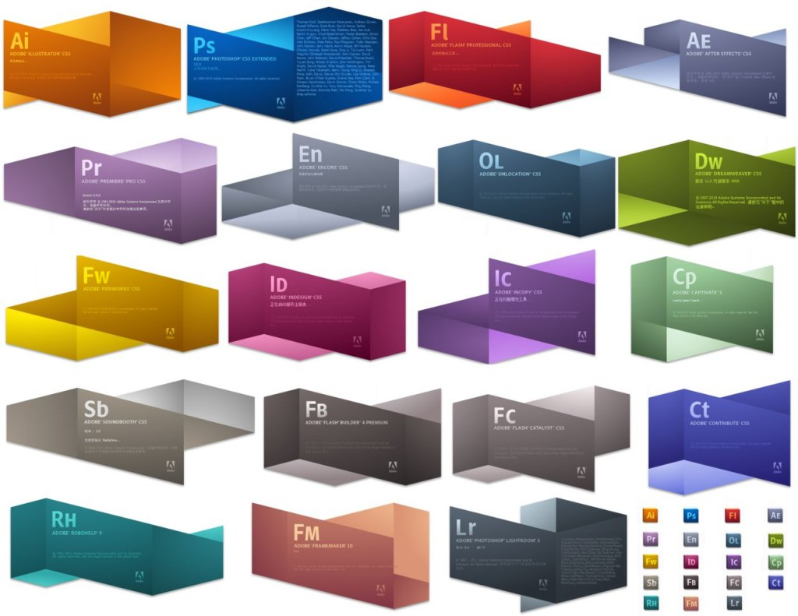
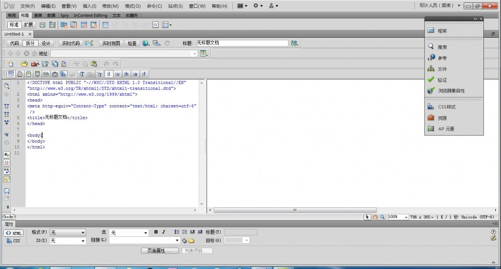
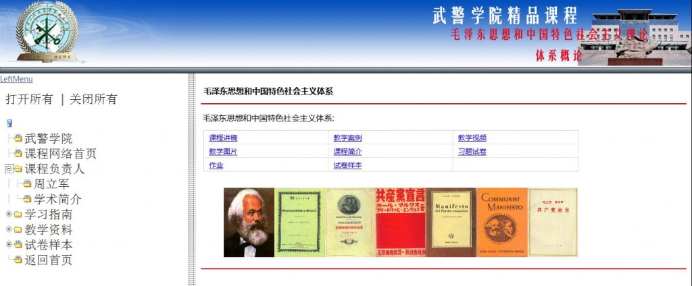

1982年 12 月 ，一件影响我们生活的事情发生了！JohnE. Warnock 博士Charles M. Geschke 博士创建
了Adobe Systems Incorporated （奥多比系统公司），看看下面的图片，找找我们熟悉的图标吧：

我发现我已经无法离开这个只跟在我生活里的公司了，不论我在哪里，打开电脑，除了微软，我想第二
个就是adobe公司！我感叹一个公司的神奇！
最近新认识了一个adobe 的产品，dreamweaver 有不得不让我感叹，adobe公司做软件的远见卓识！
打开软件，熟悉的启动窗体，熟悉的面板操作，面生的html （HypertextMarkup Language）语言，首先是
分成两个的窗体，一个是代码窗体，一个是设计窗体，他们既可以同时出现，也可以单个出现，方便了三种人
的操作习惯（adobe的无微不至）

当然，我作为初学者，先看了点关于adobe的教程，尝试着熟悉界面，发现和以前使用photoshop 没有太
大的差别，有vb的基础，对拖拉控件的操作也应该得心应手，下面我就对树形目录与iframe交互举个例子。
首先认识，树形目录，他的名字叫dtree ，dtree是一个由JavaScript编写成的简单的树形菜单组件，目前
免费并且开源。首先从网上下载 dtree.rar文件，用dreamweaver新建一个html文档，引入dtree.css和 dtree.js
下面就是具体用法，简单应用
add(id,pid,name,url,title,target,icon,iconOpen,open);
|
位置 |
参数别名 |
类型 |
功能 |
|
1 |
id |
int |
节点自身的id(唯一) |
|
2 |
pid |
int |
节点的父节点id |
|
3 |
name |
string |
节点显示在页面上的名称 |
|
4 |
url |
string |
节点的链接地址 |
|
5 |
title |
string |
鼠标放在节点上显示的提示信息 |
|
6 |
target |
string |
节点链接所打开的目标frame |
|
7 |
icon |
string |
节点关闭状态时显示的图标 |
|
8 |
iconOpen |
string |
节点打开状态时显示的图标 |
|
9 |
open |
bool |
节点第一次加载是否打开 |
建立了一个iframe
<IFRAMEheight="100%" src="" frameBorder=0 width="100%" name=mainFrame> </IFRAME>
记住他的name属性(mainFrame)
再创建dtree
<!DOCTYPE html PUBLIC "-//W3C//DTD XHTML 1.0 Strict//EN" "http://www.w3.org/TR/xhtml1/DTD/xhtml1-strict.dtd">
<html>
<head>
<title>Destroydrop » Javascripts » Tree</title>
<link rel="StyleSheet" href="dtree.css" type="text/css" />
<script type="text/javascript" src="dtree.js"></script>
</head>
<body>
<div class="dtree">
<p><a href="javascript: d.openAll();">打开所有</a> | <a href="javascript: d.closeAll();">关闭所有</a></p>
<script type="text/javascript">
<!--
d = new dTree('d');
d.add(0,-1,'');
d.add(1,0,'武警学院','example01.html','','','img/imgfolder.gif');
d.add(2,0,'课程网络首页','example01.html','','','img/imgfolder.gif');
d.add(3,0,'课程负责人','首页.htm');
d.add(4,0,'学习指南','api.html','','mainFrame');
d.add(5,0,'教学资料','example01.html','','mainFrame');
d.add(6,0,'试卷样本','example01.html','','mainFrame','img/imgfolder.gif');
d.add(7,3,'周立军','example01.html','','mainFrame','img/imgfolder.gif');
d.add(8,3,'学术简介','example01.html','','mainFrame','img/imgfolder.gif');
d.add(9,4,'课程简介','example01.html','','mainFrame','img/imgfolder.gif');
d.add(10,4,'内容提要','example01.html','','mainFrame','img/imgfolder.gif');
d.add(11,4,'作业习题','example01.html','','mainFrame','img/imgfolder.gif');
d.add(12,4,'参考文献','参考书目.htm','','mainFrame','img/imgfolder.gif');
d.add(13,5,' 教案','example01.html','','mainFrame','img/imgfolder.gif');
d.add(14,5,'讲稿','example01.html','','','img/imgfolder.gif');
d.add(15,5,'案例','example01.html','','','img/imgfolder.gif');
d.add(16,5,'课件','example01.html','','','img/imgfolder.gif');
d.add(17,5,'视频','example01.html','','','img/imgfolder.gif');
d.add(18,5,'图片','example01.html','','','img/imgfolder.gif');
d.add(19,0,'返回首页','example01.html','','','img/imgfolder.gif');
d.add(20,6,'样卷一','样卷一.htm','','mainFrame','img/imgfolder.gif');
d.add(21,6,'样卷二','example01.html','','','img/imgfolder.gif');
d.add(22,6,'样卷三','example01.html','','','img/imgfolder.gif');
d.add(23,6,'样卷四','example01.html','','','img/imgfolder.gif');
d.add(24,6,'样卷五','example01.html','','','img/imgfolder.gif');
d.add(25,6,'样卷六','example01.html','','','img/imgfolder.gif');
d.add(26,6,'样卷七','example01.html','','','img/imgfolder.gif');
d.add(27,6,'样卷八','example01.html','','','img/imgfolder.gif');
d.add(28,6,'样卷九','example01.html','','','img/imgfolder.gif');
d.add(29,6,'样卷十','example01.html','','','img/imgfolder.gif');
d.add(30,11,'第一章','example01.html','','','img/imgfolder.gif');
d.add(31,11,'第二章','example01.html','','','img/imgfolder.gif');
d.add(32,11,'第三章','example01.html','','','img/imgfolder.gif');
d.add(33,11,'第四章','example01.html','','','img/imgfolder.gif');
d.add(34,11,'第五章','example01.html','','','img/imgfolder.gif');
d.add(35,11,'第六章','example01.html','','','img/imgfolder.gif');
d.add(36,11,'第七章','example01.html','','','img/imgfolder.gif');
d.add(37,11,'第八章','example01.html','','','img/imgfolder.gif');
d.add(38,11,'第九章','example01.html','','','img/imgfolder.gif');
d.add(39,11,'第十章','example01.html','','','img/imgfolder.gif');
d.add(40,11,'第十一章','example01.html','','','img/imgfolder.gif');
d.add(41,11,'第十二章','example01.html','','','img/imgfolder.gif');
d.add(42,11,'第十三章','example01.html','','','img/imgfolder.gif');
d.add(43,11,'第十四章','example01.html','','','img/imgfolder.gif');
d.add(44,11,'第十五章','example01.html','','','img/imgfolder.gif');
document.write(d);
//-->
</script>
</div>
</body>
</html>
注：未完善，请根据自己需要修改属性
这样，一个简单的网页就做好了
预览一下
我相信有一天，我们国家也可以开发出如此优秀的工具！为世界服务